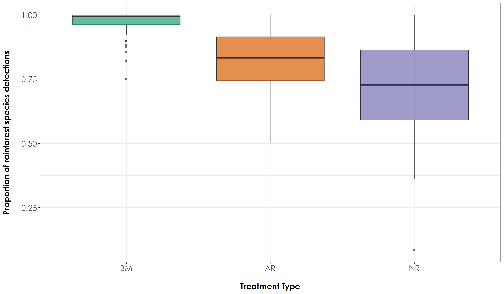
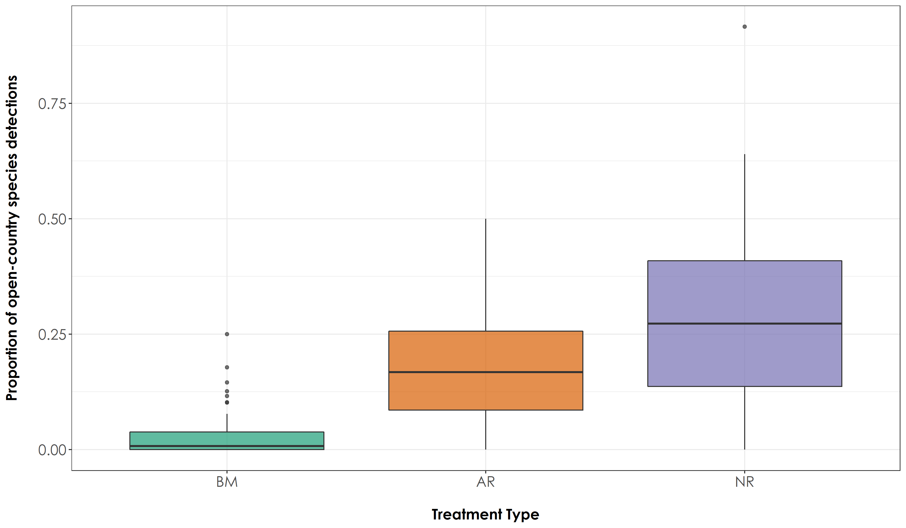
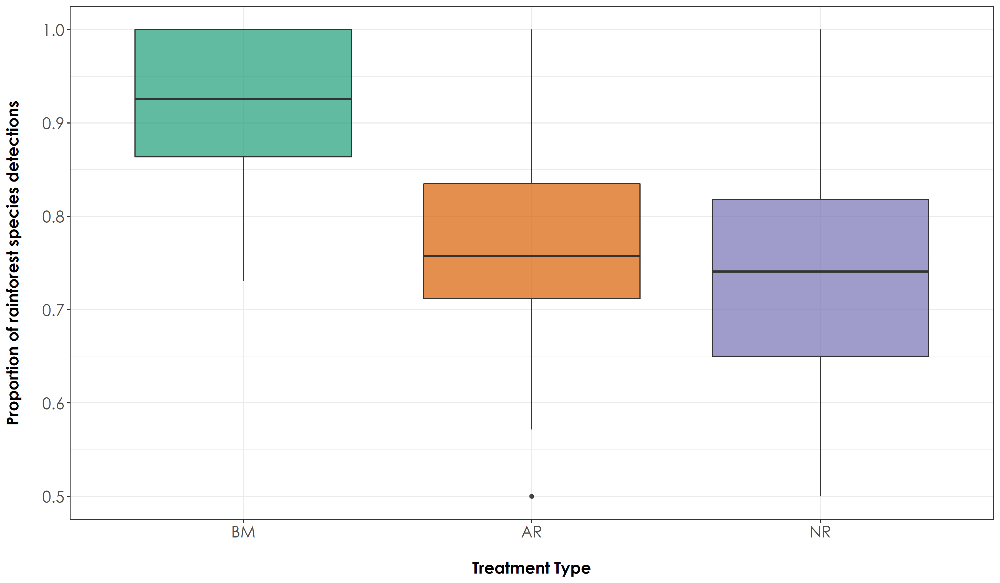
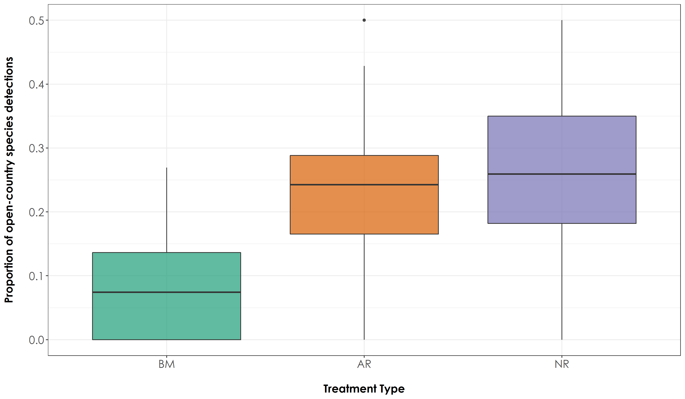

Section 10 Species proportions
In this script, we will calculate the proportion of rainforest and open-country bird species that was detected across the three treatment types for a given period of time. Species richness may only give us a broader understanding of the overall levels of diversity, but getting at a measure of abundance (where we calculate the proportion of rainforest and open-country birds that were vocal in a given habitat type for a given period of time) may provide insights on the use of a particular habitat - an important question that needs to be answered, given that we would like to understand if fauna are using actively restored habitats.
10.0.1 Install required libraries
library(tidyverse)
library(dplyr)
library(stringr)
library(vegan)
library(ggplot2)
library(scico)
library(data.table)
library(extrafont)
# Source any custom/other internal functions necessary for analysis
source("code/01_internal-functions.R")10.0.2 Load the necessary data to calculate proportions
# We load the subset data
datSubset <- read.csv("results/datSubset.csv")
# Load species-trait data to essentially check for associations by habitat type
trait_dat <- read.csv("data/species-trait-dat.csv")
# Site-summary (Number of detections across all sites)
datSummary <- datSubset %>%
group_by(Site, Restoration.type) %>%
transform() %>% replace(is.na(.), 0) %>%
summarise_at(.vars = vars(c("IP":"HSWP")),.funs = sum)10.0.3 Proportion of acoustic detections across all 10-s chunks for every site-date combination
# Calculate the overall number of detections for each site across 6 days of data (translates to ~96-min of data per site; each detection corresponding to a temporal unit of 10 seconds). Here, we include dates, since each visit can explain the detections/proportion of detections for future modeling.
nDetections_site_date <- datSubset %>%
group_by(Site, Restoration.type, Date) %>%
transform() %>% replace(is.na(.), 0) %>%
summarise_at(.vars = vars(c("IP":"HSWP")),.funs = sum)
# Combine the nDetections and trait based data
nDetections_trait <- nDetections_site_date %>%
pivot_longer(cols=IP:HSWP, names_to="Species_Code", values_to="count") %>%
left_join(.,trait_dat, by=c("Species_Code"="species_annotation_codes")) %>%
mutate(forProp = case_when(count>0 ~ 1,count==0 ~ 0)) %>%
rename(., nDetections = count)
# Extract proportion of acoustic detections
totRainDetections <- nDetections_trait %>%
filter(habitat=="RF") %>%
group_by(Site, Date, Restoration.type) %>%
summarise(totRFDetections = sum(nDetections))
totOpenDetections <- nDetections_trait %>%
filter(habitat=="OC") %>%
group_by(Site, Date, Restoration.type) %>%
summarise(totOCDetections = sum(nDetections))
# proportion of acoustic detections (note: sampling unit = 10-s)
prop <- left_join(totRainDetections, totOpenDetections,
by=c("Site","Date","Restoration.type")) %>%
mutate(propRF = (totRFDetections)/(totRFDetections + totOCDetections)) %>%
mutate(propOC = (1 - propRF))
# write the above results
write.csv(prop, "results/acoustic-detections.csv", row.names = F)10.0.4 Testing for differences in species acoustic detections across treatment types
Plotting proportion of rainforest and open -country species detections and testing for any significant differences between treatment types
# Test if there are significant differences in the proportion of rainforest species across treatment types
anovaPropRF <- aov(propRF~Restoration.type, data = prop)
tukeyPropRF <- TukeyHSD(anovaPropRF)
# Test if there are significant differences in the proportion of open country species across treatment types
anovaPropOC <- aov(propOC~Restoration.type, data = prop)
tukeyPropOC <- TukeyHSD(anovaPropOC)
# The above result suggests that there is a significant difference in the proportion of detections of rainforest and open-country species across treatment types
# reordering factors for plotting
prop$Restoration.type <- factor(prop$Restoration.type, levels = c("Benchmark", "Active", "Passive"))
# Add a custom set of colors
mycolors <- c(brewer.pal(name="Dark2", n = 3), brewer.pal(name="Paired", n = 3))
fig_propRF <- ggplot(prop, aes(x=Restoration.type, y=propRF, fill=Restoration.type)) + geom_boxplot(alpha=0.7) +
scale_fill_manual("Treatment type",values=mycolors, labels=c("BM","AR","NR")) +
theme_bw() +
labs(x="\nTreatment Type",
y="Proportion of rainforest species detections\n") +
scale_x_discrete(labels = c('BM','AR','NR')) +
theme(axis.title = element_text(family = "Century Gothic",
size = 14, face = "bold"),
axis.text = element_text(family="Century Gothic",size = 14),
legend.position = "none")
ggsave(fig_propRF, filename = "figs/fig_acousticDetections_propRF.png", width=12, height=7, device = png(), units="in", dpi = 300); dev.off()
fig_propOC <- ggplot(prop, aes(x=Restoration.type, y=propOC, fill=Restoration.type)) + geom_boxplot(alpha=0.7) +
scale_fill_manual("Treatment type",values=mycolors, labels=c("BM","AR","NR")) +
theme_bw() +
labs(x="\nTreatment Type",
y="Proportion of open-country species detections\n") +
scale_x_discrete(labels = c('BM','AR','NR')) +
theme(axis.title = element_text(family = "Century Gothic",
size = 14, face = "bold"),
axis.text = element_text(family="Century Gothic",size = 14),
legend.position = "none")
ggsave(fig_propOC, filename = "figs/fig_acousticDetections_propOC.png", width=12, height=7, device = png(), units="in", dpi = 300); dev.off() 
10.0.5 Proportion of detections across acoustic point counts
Here, we repeat the above analysis with a different sampling unit, where the total number of detections of a species was estimated for each point count rather than across 10-s chunks. In other words, if a species was detected thrice vocally, it was marked as a single detection in that point count.
# Rather than summing the total number of detections across all 10-s clips for every 16-min, here we calculate the proportion of times a species was detected in six visits.
# Extract proportion of rainforest species detections across six visits
totRainVisits <- nDetections_trait %>%
filter(habitat=="RF") %>%
group_by(Site, Date, Restoration.type) %>%
summarise(totRF = sum(forProp))
totOpenVisits <- nDetections_trait %>%
filter(habitat=="OC") %>%
group_by(Site, Date, Restoration.type) %>%
summarise(totOC = sum(forProp))
# proportion of acoustic detections (note: sampling unit = 1 point count)
propVisit <- left_join(totRainVisits, totOpenVisits,
by=c("Site","Date","Restoration.type")) %>%
mutate(propRF = (totRF)/(totRF + totOC)) %>%
mutate(propOC = (1 - propRF))
# write the above results to a file
write.csv(propVisit, "results/acoustic-detections-across-visits.csv", row.names = F)10.0.6 Testing for differences in rainforest and open-country species detections across acoustic point counts
# Test if there are significant differences in the proportion of rainforest species across treatment types
anovaRF <- aov(propRF~Restoration.type, data = propVisit)
tukeyRF <- TukeyHSD(anovaRF)
# Test if there are significant differences in the proportion of rainforest species across treatment types
anovaOC <- aov(propOC~Restoration.type, data = propVisit)
tukeyOC <- TukeyHSD(anovaOC)
# The above result suggests that there is a significant difference in the proportion of detections of rainforest and open-country species across all treatment types at the level of an acoustic point count.
# Create a boxplot of proportion estimates by group (Here: group refers to Restoration Type)
# reordering factors for plotting
propVisit$Restoration.type <- factor(propVisit$Restoration.type, levels = c("Benchmark", "Active", "Passive"))
fig_RF <- ggplot(propVisit, aes(x=Restoration.type, y=propRF, fill=Restoration.type)) + geom_boxplot(alpha=0.7) +
scale_fill_manual("Treatment type",values=mycolors, labels=c("BM","AR","NR")) +
theme_bw() +
labs(x="\nTreatment Type",
y="Proportion of rainforest species detections\n") +
scale_x_discrete(labels = c('BM','AR','NR')) +
theme(axis.title = element_text(family = "Century Gothic",
size = 14, face = "bold"),
axis.text = element_text(family="Century Gothic",size = 14),
legend.position = "none")
ggsave(fig_RF, filename = "figs/fig_acousticPointCount_propRF.png", width=12, height=7, device = png(), units="in", dpi = 300); dev.off()
fig_OC <- ggplot(propVisit, aes(x=Restoration.type, y=propOC, fill=Restoration.type)) + geom_boxplot(alpha=0.7) +
scale_fill_manual("Treatment type",values=mycolors, labels=c("BM","AR","NR")) +
theme_bw() +
labs(x="\nTreatment Type",
y="Proportion of open-country species detections\n") +
scale_x_discrete(labels = c('BM','AR','NR')) +
theme(axis.title = element_text(family = "Century Gothic",
size = 14, face = "bold"),
axis.text = element_text(family="Century Gothic",size = 14),
legend.position = "none")
ggsave(fig_OC, filename = "figs/fig_acousticPointCount_propOC.png", width=12, height=7, device = png(), units="in", dpi = 300); dev.off() 